The oppr R package is decision support tool for prioritizing conservation projects. Prioritizations can be developed by maximizing expected feature richness, expected phylogenetic diversity, the number of features that meet persistence targets, or identifying a set of projects that meet persistence targets for minimal cost. Constraints (e.g. lock in specific actions) and feature weights can also be specified to further customize prioritizations. After defining a project prioritization problem, solutions can be obtained using exact algorithms, heuristic algorithms, or random processes. In particular, it is recommended to install the ‘Gurobi’ optimizer because it can identify optimal solutions very quickly. Finally, methods are provided for comparing different prioritizations and evaluating their benefits.
Here we will provide a short tutorial showing how the oppr R package can be used to prioritize funding for conservation projects. This package is a general purpose project prioritization decision support tool. It can generate solutions for species-based project prioritization problems (Joseph et al. 2009; Bennett et al. 2014) and priority threat management problems (Carwardine et al. 2018). To develop a project prioritization, this package requires data for (i) conservation projects, (ii) management actions data, and (iii) biodiversity features.
Briefly, biodiversity features are the biological entities that we wish would persist into the future (e.g. threatened populations, native species, eco-systems). These biodiversity features can (and ideally should) include non-threatened species, but should not include threatening processes that we wish to eradicate (e.g. populations of invasive species). Management actions are acts that can be undertaken to enhance biodiversity (e.g. planting native species, reintroducing native species, trapping pest species). Each action should pertain to a specific location (e.g. a national park) or area (e.g. an entire country), and should be associated with a cost estimate. To guide the prioritization, the management actions are grouped into conservation projects (also termed “strategies”). Typically, management actions are grouped into conservation projects based on spatial (e.g. management actions that pertain to the same area), taxonomic (e.g. management actions that pertain to the same pest species or threatened species), or thematic criteria (e.g. management actions that pertain to pest eradication are grouped into a “pest project”, and actions that pertain to habitat restoration are grouped into a “habitat project”). Additionally, some conservation projects can be combinations of other projects (e.g. a “pest and habitat project”). Each conservation project should be associated with (i) a probability of succeeding if it is implemented (also termed “feasibility”), (ii) information about which management actions are associated with it, and (iii) an estimate of how likely each conservation feature affected by the project is to persist into the future if the project is implemented (often derived using expert elicitation). The conservation projects should also include a “baseline project” that represents a “do nothing scenario” which has a 100% chance of succeeding and is associated with an action that costs nothing to implement. This is important because we can’t find a cost-effective solution if we don’t know how much each project improves a species’ chance at persistence. For more background information on project prioritization, please refer to Carwardine et al. (2018).
To start off, we will initialize the random number generator to ensure reproducibility. Next, we will load the oppr R package. And then we will load the ggplot2, tibble, and tidyr R packages to help with data for visualizations and wrangling.
# set random number generated seed
set.seed(1000)
# load oppr package for project prioritization
library(oppr)
# load ggplot2 package for plotting
library(ggplot2)
# load tibble package for working with tabular data
library(tibble)
# load tidyr package for reshaping tabular data
library(tidyr)#
# Attaching package: 'tidyr'
# The following object is masked from 'package:testthat':
#
# matches
Now we will simulate a dataset to practice developing project prioritizations. Specifically, we will simulate a dataset for a priority threat management exercise that contains 40 features, 70 projects, and 30 actions.
# simulate data
sim_data <- simulate_ptm_data(number_projects = 70, number_actions = 30,
number_features = 40)
# extract project, action, feature data
projects <- sim_data$projects
actions <- sim_data$actions
features <- sim_data$features
# manually set feature weights for teaching purposes
features$weight <- exp(runif(nrow(features), 1, 15))
# print data
print(projects) # data for conservation projects# # A tibble: 71 × 73
# name success F1 F2 F3 F4 F5 F6 F7 F8 F9
# <chr> <dbl> <dbl> <dbl> <dbl> <dbl> <dbl> <dbl> <dbl> <dbl> <dbl>
# 1 project… 0.720 0.672 NA NA NA 0.704 NA NA 0.523 NA
# 2 project… 0.859 0.514 NA NA 0.832 0.616 NA NA 0.547 0.687
# 3 project… 0.724 NA NA NA 0.812 NA NA NA NA 0.627
# 4 project… 0.768 0.505 NA NA NA NA 0.530 0.708 NA NA
# 5 project… 0.856 0.539 NA NA NA NA 0.844 0.608 0.590 NA
# 6 project… 0.891 NA NA NA NA NA 0.563 NA NA NA
# 7 project… 0.874 0.546 NA NA NA 0.682 0.576 0.676 0.737 NA
# 8 project… 0.932 0.593 NA NA NA NA 0.803 0.580 0.666 NA
# 9 project… 0.900 NA NA NA 0.572 0.547 NA NA NA NA
# 10 project… 0.952 NA NA NA NA NA NA NA NA NA
# # ℹ 61 more rows
# # ℹ 62 more variables: F10 <dbl>, F11 <dbl>, F12 <dbl>, F13 <dbl>, F14 <dbl>,
# # F15 <dbl>, F16 <dbl>, F17 <dbl>, F18 <dbl>, F19 <dbl>, F20 <dbl>,
# # F21 <dbl>, F22 <dbl>, F23 <dbl>, F24 <dbl>, F25 <dbl>, F26 <dbl>,
# # F27 <dbl>, F28 <dbl>, F29 <dbl>, F30 <dbl>, F31 <dbl>, F32 <dbl>,
# # F33 <dbl>, F34 <dbl>, F35 <dbl>, F36 <dbl>, F37 <dbl>, F38 <dbl>,
# # F39 <dbl>, F40 <dbl>, action_1 <lgl>, action_2 <lgl>, action_3 <lgl>, …
print(actions) # data for management actions# # A tibble: 31 × 4
# name cost locked_in locked_out
# <chr> <dbl> <lgl> <lgl>
# 1 action_1 97.8 FALSE FALSE
# 2 action_2 94.0 FALSE FALSE
# 3 action_3 100. FALSE FALSE
# 4 action_4 103. FALSE FALSE
# 5 action_5 96.1 FALSE FALSE
# 6 action_6 98.1 FALSE FALSE
# 7 action_7 97.6 FALSE FALSE
# 8 action_8 104. FALSE FALSE
# 9 action_9 99.9 FALSE FALSE
# 10 action_10 93.1 FALSE FALSE
# # ℹ 21 more rows
print(features) # data for biodiversity features# # A tibble: 40 × 2
# name weight
# <chr> <dbl>
# 1 F1 210.
# 2 F2 7.64
# 3 F3 7.99
# 4 F4 7732.
# 5 F5 34905.
# 6 F6 3.31
# 7 F7 1168.
# 8 F8 108301.
# 9 F9 3.62
# 10 F10 6956.
# # ℹ 30 more rows
Let’s assume that we want to maximize the overall persistence of the conservation features, and that we can only spend $1,000 funding management actions. We will also assume that our decisions involve either funding management actions or not (in other words, our decisions are binary). For the moment, let’s assume that we value the persistence of each feature equally. Given this information, we can generate a project prioritization problem object that matches our specifications.
# build problem
p1 <- problem(projects = projects, actions = actions, features = features,
"name", "success", "name", "cost", "name") %>%
add_max_richness_objective(budget = 1000) %>%
add_binary_decisions()
# print problem
print(p1)# Project Prioritization Problem
# actions action_1, action_2, action_3, ... (31 actions)
# projects project_1, project_2, project_3, ... (71 projects)
# features F1, F2, F3, ... (40 features)
# action costs: min: 0, max: 113.35036
# project success: min: 0.70247, max: 1
# objective: Maximum richness objective [budget (1000)]
# targets: none
# weights: default
# decisions Binary decision
# constraints: <none>
# solver: default
After building the problem, we can solve it. Although backwards heuristic algorithms have conventionally been used to solve project prioritization problems (e.g. Joseph et al. 2009; Bennett et al. 2014; Gerber et al. 2018), here we will use exact algorithms to develop a prioritization. Exact algorithms are superior to heuristic algorithms because they can provide guarantees on solution quality (Underhill 1994; Rodrigues & Gaston 2002). In other words, if you specify that you want an optimal solution when using exact algorithms, then you are guaranteed to get an optimal solution. Heuristic algorithms—and even more advanced meta-heuristic algorithms such as simulated annealing that are commonly to guide conservation decision making (Kirkpatrick et al. 1983)—provide no such guarantees and can actually deliver remarkably poor solutions (e.g. Beyer et al. 2016). Later on we will experiment with heuristic algorithms, but for now, we will use exact algorithms. Since we haven’t explicitly stated which solver we would like to use, the oppr R package will identify the best exact algorithm solver currently installed on your system. This is typically the lpSolveAPI R package unless you have manually installed the gurobi R package and the Gurobi optimization suite. Although not shown here, when you try solving the problem you will see information printed to your screen as the solver tries to find an optimal solution. Please do not be alarmed, this is normal behavior and some of the information can actually be useful (e.g. to estimate how long it might take to solve the problem).
# solve problem
s1 <- solve(p1)
# print solution
print(s1)# # A tibble: 1 × 146
# solution status obj cost action_1 action_2 action_3 action_4 action_5
# <int> <chr> <dbl> <dbl> <dbl> <dbl> <dbl> <dbl> <dbl>
# 1 1 OPTIMAL 31.0 993. 1 1 0 0 0
# # ℹ 137 more variables: action_6 <dbl>, action_7 <dbl>, action_8 <dbl>,
# # action_9 <dbl>, action_10 <dbl>, action_11 <dbl>, action_12 <dbl>,
# # action_13 <dbl>, action_14 <dbl>, action_15 <dbl>, action_16 <dbl>,
# # action_17 <dbl>, action_18 <dbl>, action_19 <dbl>, action_20 <dbl>,
# # action_21 <dbl>, action_22 <dbl>, action_23 <dbl>, action_24 <dbl>,
# # action_25 <dbl>, action_26 <dbl>, action_27 <dbl>, action_28 <dbl>,
# # action_29 <dbl>, action_30 <dbl>, baseline_action <dbl>, project_1 <dbl>, …
The s1 table contains the solution (i.e. a prioritization) and also various statistics associated with the solution. Here, each row corresponds to a different solution. By default only one solution will be returned, and so the table has one row. The "solution" column contains an integer identifier for the solution (this is when multiple solutions are output), the "obj" column contains the objective value (i.e. the expected feature richness in this case), the "cost" column stores the cost of the solution, and the "status" column contains information from the solver about the solution (i.e. it found an optimal solution). Additionally, it contains columns for each action ("action_1", "action_2", "action_3", …, "baseline_action") which indicate their status in the solution. In other words, these columns tell us if each action was prioritized for funding in the solution (i.e. a value of one) or not (i.e. a value of zero). Additionally, it contains columns for each project ("project_1", "project_2", "project_3", …, "baseline_project") that indicate if the project was completely funded or not. Finally, this table contains columns for each feature ("F1, "F2", "F3, …) which indicate the probability that each feature is expected to persist into the future if the solution was implemented (for information on how this is calculated see ?add_max_richness_objective).
Since the text printed to the screen doesn’t show which projects were completely funded, let’s extract this information from the table.
# extract names of funded projects
s1_projects <- s1[, c("solution", p1$project_names())] %>%
gather(project, status, -solution)
# print project results
print(s1_projects)# # A tibble: 71 × 3
# solution project status
# <int> <chr> <dbl>
# 1 1 project_1 0
# 2 1 project_2 0
# 3 1 project_3 0
# 4 1 project_4 0
# 5 1 project_5 0
# 6 1 project_6 0
# 7 1 project_7 0
# 8 1 project_8 0
# 9 1 project_9 0
# 10 1 project_10 0
# # ℹ 61 more rows
# print names of completely funded projects
s1_projects$project[s1_projects$status > 0]# [1] "project_20" "project_23" "project_28" "project_48" "project_69"
We could also calculate cost-effectiveness measures for each of the conservation projects.
# calculate cost-effectiveness of each project
p1_pce <- project_cost_effectiveness(p1)
# print output
print(p1_pce)# # A tibble: 71 × 6
# project cost obj benefit ce rank
# <chr> <dbl> <dbl> <dbl> <dbl> <dbl>
# 1 project_1 992. 15.4 4.65 0.00469 63
# 2 project_2 2299. 31.1 20.3 0.00885 27
# 3 project_3 578. 15.1 4.35 0.00753 57
# 4 project_4 1482. 23.5 12.7 0.00859 31
# 5 project_5 2292. 30.2 19.5 0.00850 33
# 6 project_6 1296. 12.6 1.85 0.00142 69
# 7 project_7 785. 15.3 4.52 0.00576 61
# 8 project_8 2761. 33.1 22.3 0.00809 44
# 9 project_9 1786. 15.7 4.95 0.00277 65
# 10 project_10 2977. 34.7 24.0 0.00806 46.5
# # ℹ 61 more rows
The p1_pce table contains the cost-effectiveness of each project. Specifically, the "project" column contains the name of each project. The "cost" column contains the total cost of all the management actions associated with the project. The "obj" column contains the objective value associated with a solution that contains all of the management actions for each project, and also the actions associated with a zero cost. The "benefit" column contains the difference between (i) the objective value associated with each project and also any zero cost actions (as per the "obj" column), and (ii) the objective value associated with the baseline project. The "ce" column contains the cost-effectiveness of each project. For a given project, this is calculated by dividing its benefit by its cost (as per the "benefit" and "cost" columns). The "rank" column contains the rank for each project, with the most cost-effective project having a rank of one.
By combining the project cost-effectiveness table with the project funding table, we can see that many of the projects selected for funding are not actually the most cost-effective projects. This is because simply selecting the most cost-effective projects might double up on the same features and reduce the overall effectiveness of the solution (see Chadés et al. 2015 for more information).
# print the ranks of the priority projects
p1_pce$rank[s1_projects$status > 0]# [1] 9 2 4 3 1
We could also save these table to our computer (e.g. so we could view them in a spreadsheet program, such as Microsoft Excel).
# print folder where the file will be saved
cat(getwd(), "\n")
# save table to file
write.table(s1, "solutions.csv" , sep = ",", row.names = FALSE)
write.table(s1_projects, "project_statuses.csv" , sep = ",", row.names = FALSE)
write.table(p1_pce, "project_ce.csv" , sep = ",", row.names = FALSE)Since visualizations are an effective way to understand data, let’s create a bar plot to visualize how well this solution would conserve the features. In this plot, each bar corresponds to a different feature, the width of each bar corresponds to its expected probability of persistence, the color of each bar corresponds to the feature’s weight (since we didn’t specify any weights, all bars are the same color). Asterisks denote features that benefit from fully funded projects, and open circles (if any) denote features that do not benefit from fully funded projects but may indirectly benefit from partially funded projects.
# plot solution
plot(p1, s1)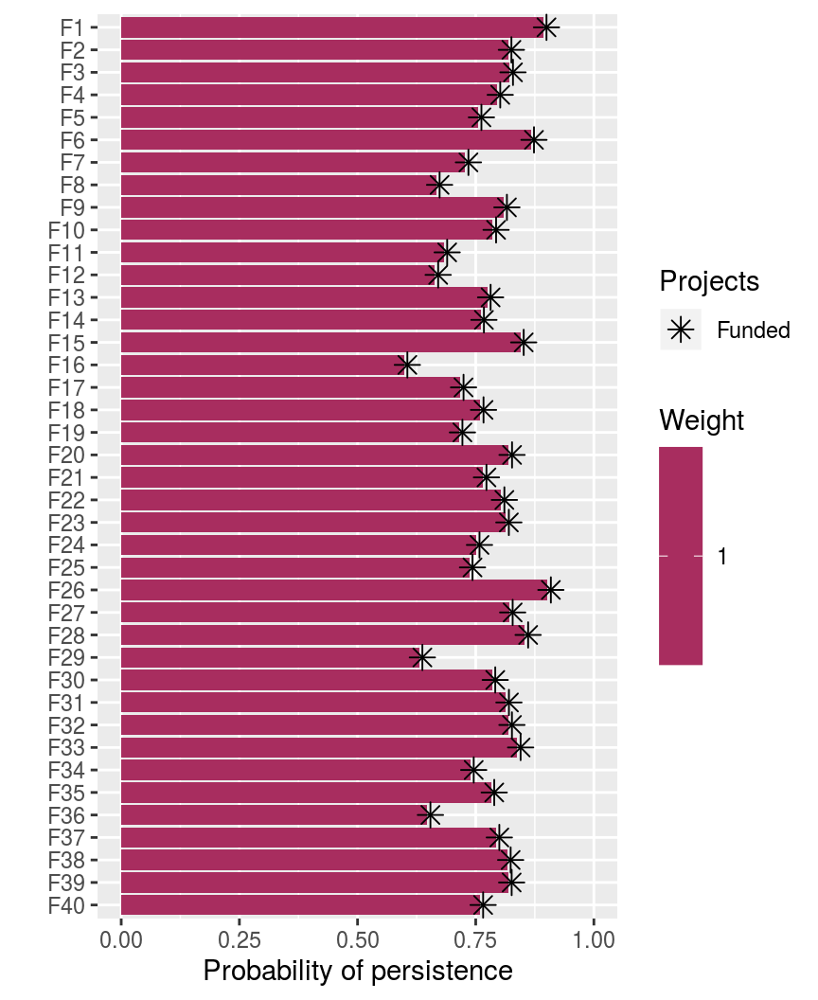
Overall, we can see that most species have a fairly decent chance at persisting into the future (approx. 77%). But when making this prioritization, we assumed that we valued the persistence of each feature equally. It is often important to account for the fact that certain features are valued more highly than other features when making prioritizations (e.g. for cultural or taxonomic reasons). The features table that we created earlier contains a "weight" column, and features with larger values mean that they are more important. Let’s quickly visualize the feature weight values.
# print features table
print(features)# # A tibble: 40 × 2
# name weight
# <chr> <dbl>
# 1 F1 210.
# 2 F2 7.64
# 3 F3 7.99
# 4 F4 7732.
# 5 F5 34905.
# 6 F6 3.31
# 7 F7 1168.
# 8 F8 108301.
# 9 F9 3.62
# 10 F10 6956.
# # ℹ 30 more rows
# plot histogram of feature weights
ggplot(data = features, aes(weight)) +
geom_histogram(bins = 30) +
scale_x_continuous(labels = scales::comma) +
xlab("Feature weight") +
ylab("Frequency")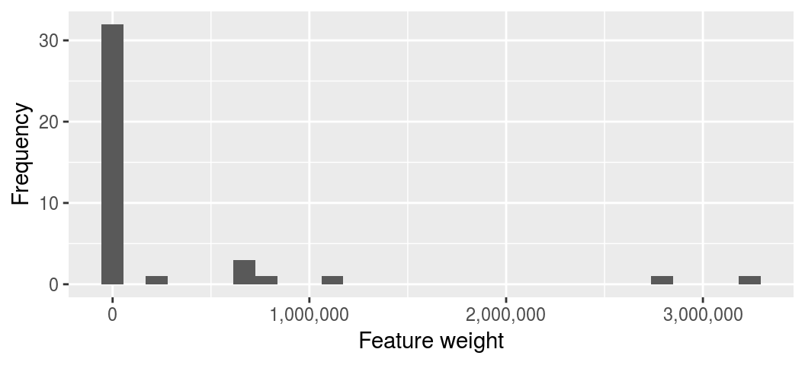
We can see that most features have a low weighting (less than 1,000), but a few features have very high weightings (greater than 500,000). Let’s make a new problem based on the original problem, add the feature weights to the new problem, and then solve this new problem.
# build on existing problem and add feature weights
p2 <- p1 %>%
add_feature_weights("weight")
# print problem
print(p2)# Project Prioritization Problem
# actions action_1, action_2, action_3, ... (31 actions)
# projects project_1, project_2, project_3, ... (71 projects)
# features F1, F2, F3, ... (40 features)
# action costs: min: 0, max: 113.35036
# project success: min: 0.70247, max: 1
# objective: Maximum richness objective [budget (1000)]
# targets: none
# weights: min: 3.31044, max: 2432637.83911
# decisions Binary decision
# constraints: <none>
# solver: default
# solve problem
s2 <- solve(p2)
# print solution
print(s2)# # A tibble: 1 × 146
# solution status obj cost action_1 action_2 action_3 action_4 action_5
# <int> <chr> <dbl> <dbl> <dbl> <dbl> <dbl> <dbl> <dbl>
# 1 1 OPTIMAL 6290606. 987. 0 1 1 0 0
# # ℹ 137 more variables: action_6 <dbl>, action_7 <dbl>, action_8 <dbl>,
# # action_9 <dbl>, action_10 <dbl>, action_11 <dbl>, action_12 <dbl>,
# # action_13 <dbl>, action_14 <dbl>, action_15 <dbl>, action_16 <dbl>,
# # action_17 <dbl>, action_18 <dbl>, action_19 <dbl>, action_20 <dbl>,
# # action_21 <dbl>, action_22 <dbl>, action_23 <dbl>, action_24 <dbl>,
# # action_25 <dbl>, action_26 <dbl>, action_27 <dbl>, action_28 <dbl>,
# # action_29 <dbl>, action_30 <dbl>, baseline_action <dbl>, project_1 <dbl>, …
# plot solution
plot(p2, s2)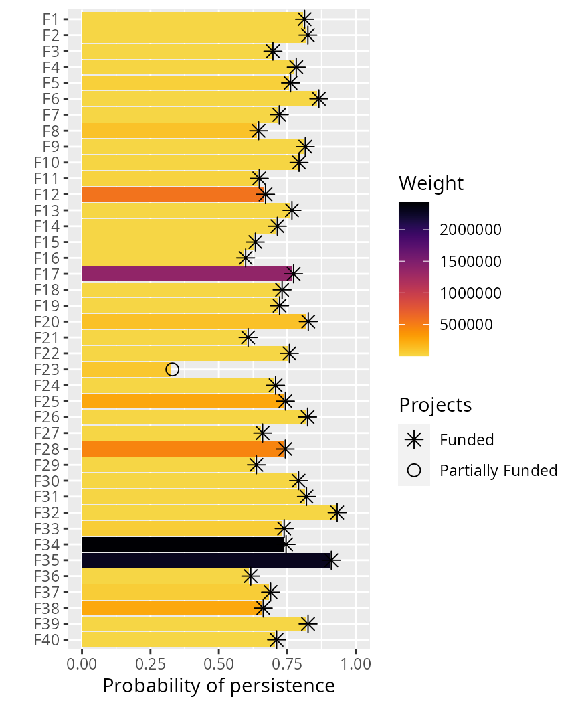
We can also examine how adding feature weights changed our solution.
# print actions prioritized for funding in first solution
actions$name[which(as.logical(as.matrix(s1[, action_names(p1)])))]# [1] "action_1" "action_2" "action_10" "action_14" "action_21" "action_22"
# [7] "action_26" "action_27" "action_28" "action_30"
# print actions prioritized for funding in second solution
actions$name[which(as.logical(as.matrix(s2[, action_names(p2)])))]# [1] "action_2" "action_3" "action_14" "action_17"
# [5] "action_19" "action_21" "action_22" "action_27"
# [9] "action_28" "action_29" "baseline_action"
# calculate number of actions funded in both solutions
sum((as.matrix(s1[, action_names(p1)]) == 1) &
(as.matrix(s2[, action_names(p2)]) == 1))# [1] 6
Earlier, we talked about the oppr R package using the default exact algorithm solver. Although you should have the lpSolveAPI solver automatically installed, we strongly recommend installing the gurobi R package and the Gurobi optimization suite. This is because Gurobi can solve optimization problems much faster than any other software currently supported and it can also easily generate multiple solutions. Unfortunately, you will have to install Gurobi manually, but please see the documentation for the solver for instructions (i.e. enter the command ?add_gurobi_solver into the console). If you have Gurobi installed, let’s try using the Gurobi solver to generate multiple solutions. Here, we will manually specify the Gurobi solver and request 1,000 solutions (though we will probably obtain less than 1,000 solutions, so if we actually wanted 1,000 solutions then we would need to specify a much larger number).
# create new problem, with Gurobi solver added and request multiple solutions
# note that we set the gap to 0.5 because we are not necessarily interested
# in the top 1,000 solutions (for more information on why read the Gurobi
# documentation on solution pools)
p3 <- p2 %>%
add_gurobi_solver(gap = 0.5, number_solution = 1000)
# solve problem
s3 <- solve(p3)
# print solution
print(s3)# # A tibble: 39 × 146
# solution status obj cost action_1 action_2 action_3 action_4 action_5
# <int> <chr> <dbl> <dbl> <dbl> <dbl> <dbl> <dbl> <dbl>
# 1 1 OPTIMAL 6.29e6 971. 0 1 1 0 0
# 2 2 OPTIMAL 6.29e6 977. 0 1 1 0 0
# 3 3 OPTIMAL 6.29e6 987. 0 1 1 0 0
# 4 4 OPTIMAL 6.29e6 874. 0 1 1 0 0
# 5 5 OPTIMAL 6.29e6 974. 0 1 1 0 0
# 6 6 OPTIMAL 6.29e6 980. 0 1 1 0 0
# 7 7 OPTIMAL 6.29e6 977. 0 1 1 1 0
# 8 8 OPTIMAL 6.29e6 971. 0 1 1 0 0
# 9 9 SUBOPTIMAL 6.29e6 974. 0 1 1 0 0
# 10 10 SUBOPTIMAL 6.10e6 976. 0 0 1 0 0
# # ℹ 29 more rows
# # ℹ 137 more variables: action_6 <dbl>, action_7 <dbl>, action_8 <dbl>,
# # action_9 <dbl>, action_10 <dbl>, action_11 <dbl>, action_12 <dbl>,
# # action_13 <dbl>, action_14 <dbl>, action_15 <dbl>, action_16 <dbl>,
# # action_17 <dbl>, action_18 <dbl>, action_19 <dbl>, action_20 <dbl>,
# # action_21 <dbl>, action_22 <dbl>, action_23 <dbl>, action_24 <dbl>,
# # action_25 <dbl>, action_26 <dbl>, action_27 <dbl>, action_28 <dbl>, …
We obtained 39 solutions. Let’s briefly explore them.
# plot histogram of objective values, and add red dashed line to indicate the
# objective value for the optimal solution
ggplot(data = s3, aes(obj)) +
geom_histogram(bins = 10) +
geom_vline(xintercept = s2$obj, color = "red", linetype = "dashed") +
scale_x_continuous(labels = scales::comma) +
xlab("Expected richness (objective function)") +
ylab("Frequency") +
theme(plot.margin = unit(c(5.5, 10.5, 5.5, 5.5), "pt"))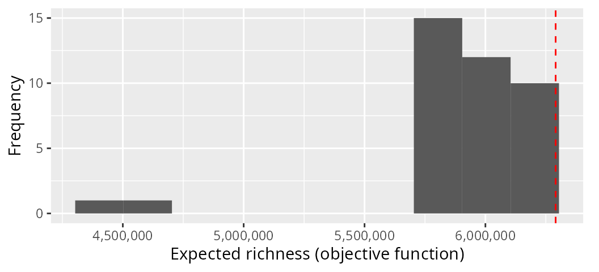
We can see that some of our solutions performed much better than other solutions. And we can also see that there are several solutions that perform nearly as well as the optimal solution.
After obtaining a solution to a project prioritization problem, it is often important to understand which of priority actions are most “important” [or in other words: irreplaceable; Kukkala & Moilanen (2013)]. This is because it may not be possible to implement all actions immediately and simultaneously, and since some conservation projects may be less likely to succeed if their management actions are delayed, it may be useful to provide decision makers with a measure of importance for each priority action. For example, if a pest eradication project is delayed, then the success of the project may diminish as pest populations increase over time. One simple—and potentially inaccurate (but see Carwardine et al. 2007)—approach for assessing the importance of priority actions (i.e. actions selected for funding in a solution) is calculating the “selection frequency” of the actions. Given multiple solutions, this metric involves calculating the average number of times that each priority action is selected (Ball et al. 2009). For illustrative purposes, we shall compute the selection frequency of the solutions we obtained previously (i.e. the s3 object).
# print the solution object to remind ourselves what it looks like
print(s3)# # A tibble: 39 × 146
# solution status obj cost action_1 action_2 action_3 action_4 action_5
# <int> <chr> <dbl> <dbl> <dbl> <dbl> <dbl> <dbl> <dbl>
# 1 1 OPTIMAL 6.29e6 971. 0 1 1 0 0
# 2 2 OPTIMAL 6.29e6 977. 0 1 1 0 0
# 3 3 OPTIMAL 6.29e6 987. 0 1 1 0 0
# 4 4 OPTIMAL 6.29e6 874. 0 1 1 0 0
# 5 5 OPTIMAL 6.29e6 974. 0 1 1 0 0
# 6 6 OPTIMAL 6.29e6 980. 0 1 1 0 0
# 7 7 OPTIMAL 6.29e6 977. 0 1 1 1 0
# 8 8 OPTIMAL 6.29e6 971. 0 1 1 0 0
# 9 9 SUBOPTIMAL 6.29e6 974. 0 1 1 0 0
# 10 10 SUBOPTIMAL 6.10e6 976. 0 0 1 0 0
# # ℹ 29 more rows
# # ℹ 137 more variables: action_6 <dbl>, action_7 <dbl>, action_8 <dbl>,
# # action_9 <dbl>, action_10 <dbl>, action_11 <dbl>, action_12 <dbl>,
# # action_13 <dbl>, action_14 <dbl>, action_15 <dbl>, action_16 <dbl>,
# # action_17 <dbl>, action_18 <dbl>, action_19 <dbl>, action_20 <dbl>,
# # action_21 <dbl>, action_22 <dbl>, action_23 <dbl>, action_24 <dbl>,
# # action_25 <dbl>, action_26 <dbl>, action_27 <dbl>, action_28 <dbl>, …
# calculate percentage of times each action was selected for
# funding in the solutions
actions$sel_freq <- apply(as.matrix(s3[, actions$name]), 2, mean) * 100
# print the actions table with the new column
print(actions)# # A tibble: 31 × 5
# name cost locked_in locked_out sel_freq
# <chr> <dbl> <lgl> <lgl> <dbl>
# 1 action_1 97.8 FALSE FALSE 5.13
# 2 action_2 94.0 FALSE FALSE 69.2
# 3 action_3 100. FALSE FALSE 61.5
# 4 action_4 103. FALSE FALSE 12.8
# 5 action_5 96.1 FALSE FALSE 2.56
# 6 action_6 98.1 FALSE FALSE 0
# 7 action_7 97.6 FALSE FALSE 10.3
# 8 action_8 104. FALSE FALSE 7.69
# 9 action_9 99.9 FALSE FALSE 7.69
# 10 action_10 93.1 FALSE FALSE 28.2
# # ℹ 21 more rows
# print top 10 most important actions based on selection frequency
head(actions[order(actions$sel_freq, decreasing = TRUE), ], n = 10)# # A tibble: 10 × 5
# name cost locked_in locked_out sel_freq
# <chr> <dbl> <lgl> <lgl> <dbl>
# 1 action_14 99.4 FALSE FALSE 97.4
# 2 baseline_action 0 FALSE FALSE 94.9
# 3 action_28 102. FALSE FALSE 89.7
# 4 action_27 91.1 FALSE FALSE 82.1
# 5 action_19 89.8 FALSE FALSE 76.9
# 6 action_2 94.0 FALSE FALSE 69.2
# 7 action_22 93.9 FALSE FALSE 69.2
# 8 action_17 101. FALSE FALSE 66.7
# 9 action_29 103. FALSE FALSE 66.7
# 10 action_3 100. FALSE FALSE 61.5
# plot histogram showing solution frequency
ggplot(data = actions, aes(sel_freq)) +
geom_histogram(bins = 30) +
coord_cartesian(xlim = c(0, 100)) +
xlab("Selection frequency (%)") +
ylab("Frequency")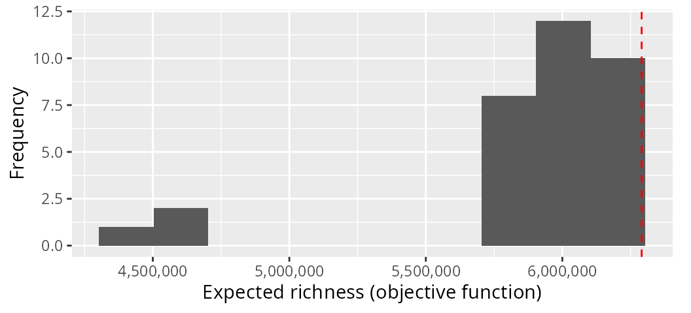
Although selection frequency might seem like an appealing metric, it suffers from an assumption that is unrealistic for most large-scale problems. Specifically, it assumes that our portfolio of solutions is a representative sample of the near-optimal solutions to the problem. And we do not currently have any method to verify this, except by enumerating all possible solutions—which is not feasible for reasonably sized project prioritization exercises. So now we shall examine a superior metric termed the “replacement cost” (Moilanen et al. 2009). Given a set of priority actions and a project prioritization problem, the replacement cost can be calculated for a given priority action by re-solving the problem with the priority action locked out, and calculating the difference between the objective value based on the priority actions and the new objective value with the priority action locked out. So let’s calculate the replacement cost for the priority actions in object s2 using the problem p2.
# print p2 to remind ourselves about the problem
print(p2)# Project Prioritization Problem
# actions action_1, action_2, action_3, ... (31 actions)
# projects project_1, project_2, project_3, ... (71 projects)
# features F1, F2, F3, ... (40 features)
# action costs: min: 0, max: 113.35036
# project success: min: 0.70247, max: 1
# objective: Maximum richness objective [budget (1000)]
# targets: none
# weights: min: 3.31044, max: 2432637.83911
# decisions Binary decision
# constraints: <none>
# solver: default
# print s2 to remind ourselves about the solution
print(s2)# # A tibble: 1 × 146
# solution status obj cost action_1 action_2 action_3 action_4 action_5
# <int> <chr> <dbl> <dbl> <dbl> <dbl> <dbl> <dbl> <dbl>
# 1 1 OPTIMAL 6290606. 987. 0 1 1 0 0
# # ℹ 137 more variables: action_6 <dbl>, action_7 <dbl>, action_8 <dbl>,
# # action_9 <dbl>, action_10 <dbl>, action_11 <dbl>, action_12 <dbl>,
# # action_13 <dbl>, action_14 <dbl>, action_15 <dbl>, action_16 <dbl>,
# # action_17 <dbl>, action_18 <dbl>, action_19 <dbl>, action_20 <dbl>,
# # action_21 <dbl>, action_22 <dbl>, action_23 <dbl>, action_24 <dbl>,
# # action_25 <dbl>, action_26 <dbl>, action_27 <dbl>, action_28 <dbl>,
# # action_29 <dbl>, action_30 <dbl>, baseline_action <dbl>, project_1 <dbl>, …
# calculate replacement costs for each priority action selected in s2
r2 <- replacement_costs(p2, s2)
# print output
print(r2)# # A tibble: 31 × 4
# name cost obj rep_cost
# <chr> <dbl> <dbl> <dbl>
# 1 action_1 NA NA NA
# 2 action_2 988. 6102909. 187698.
# 3 action_3 993. 6122986. 167620.
# 4 action_4 NA NA NA
# 5 action_5 NA NA NA
# 6 action_6 NA NA NA
# 7 action_7 NA NA NA
# 8 action_8 NA NA NA
# 9 action_9 NA NA NA
# 10 action_10 NA NA NA
# # ℹ 21 more rows
The r1 table contains the replacement costs for each action and also various statistics associated with the solutions obtained when locking out each action. Here, each row corresponds to a different action. The "action" column contains the name of the actions (as per the actions table used when building the problem), the "cost" column contains the cost of the solutions obtained when each action was locked out, the "obj" column contains the objective value of the solutions when each action was locked out (i.e. the expected feature richness in this case), and the "rep_cost" column contains the replacement costs for the actions. Actions associated with larger replacement cost values are more irreplaceable, actions associated with missing (NA) replacement cost values were not selected for funding in the input solution (i.e. s2), and actions associated with infinite (Inf) replacement cost values are absolutely critical for meeting the constraints (though infinite values should only problems with minimum set objectives and potentially the baseline project).
# add replacement costs to action table
actions$rep_cost <- r2$rep_cost
# print actions, ordered by replacement cost
print(actions[order(actions$rep_cost, decreasing = TRUE), ])# # A tibble: 31 × 6
# name cost locked_in locked_out sel_freq rep_cost
# <chr> <dbl> <lgl> <lgl> <dbl> <dbl>
# 1 action_14 99.4 FALSE FALSE 97.4 345636.
# 2 action_2 94.0 FALSE FALSE 69.2 187698.
# 3 action_22 93.9 FALSE FALSE 69.2 187698.
# 4 action_3 100. FALSE FALSE 61.5 167620.
# 5 action_17 101. FALSE FALSE 66.7 167620.
# 6 action_19 89.8 FALSE FALSE 76.9 167620.
# 7 action_27 91.1 FALSE FALSE 82.1 167620.
# 8 action_28 102. FALSE FALSE 89.7 167620.
# 9 action_29 103. FALSE FALSE 66.7 167620.
# 10 baseline_action 0 FALSE FALSE 94.9 167620.
# # ℹ 21 more rows
# test correlation between selection frequencies and replacement costs
cor.test(x = actions$sel_freq, y = actions$rep_cost, method = "pearson")#
# Pearson's product-moment correlation
#
# data: actions$sel_freq and actions$rep_cost
# t = 4.0716, df = 9, p-value = 0.002793
# alternative hypothesis: true correlation is not equal to 0
# 95 percent confidence interval:
# 0.3968373 0.9474027
# sample estimates:
# cor
# 0.8050645
# plot histogram of replacement costs,
ggplot(data = actions, aes(rep_cost)) +
geom_histogram(bins = 30, na.rm = TRUE) +
scale_x_continuous(labels = scales::comma) +
xlab("Replacement cost") +
ylab("Frequency")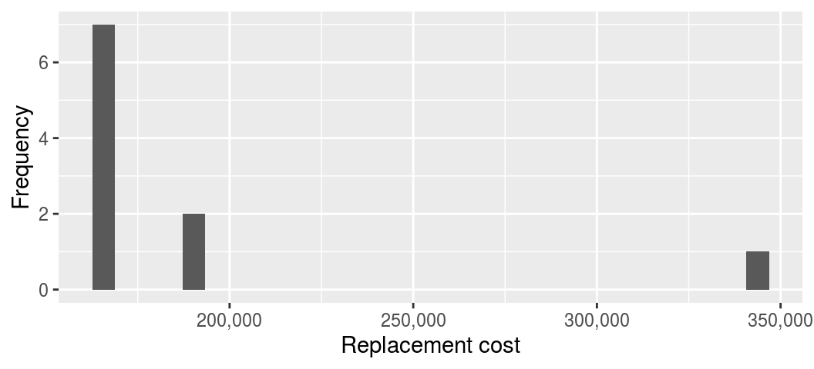
Broadly speaking, the principle of complementarity is that individual conservation actions should complement each other—in other words, they should not double up on the same biodiversity features—and when implemented together, conservation actions should conserve a comprehensive sample of biodiversity (Vane-Wright et al. 1991; Kukkala & Moilanen 2013). This principle was born from the profound realization that individual reserves need to provide habitat for different species in order to build a reserve network that provides habitat for many different species—even if this means selecting some individual reserves that do not provide habitat for as many species as other potential reserves (Kirkpatrick 1983). In the context of project prioritization, this principle means that resources should be allocated in such a way that avoids doubling up on the same conservation features so that resources can be effectively allocated to as many conservation features as possible (Chadés et al. 2015). For instance, if decision makers consider it acceptable for features to have a 70% chance of persisting into the future, then we should avoid solutions which overly surpass this threshold (e.g. 99%) because we can allocate the limited resources to help other features reach this threshold. Such target thresholds can provide a transparent and effective method for establishing conservation priorities (Carwardine et al. 2009). So, let’s try developing a prioritization with conservation targets. Specifically, we will develop a prioritization that maximizes the number of features that have a 60% chance of persisting, subject to the same $1,000 budget as before.
# build problem
p4 <- problem(projects = projects, actions = actions, features = features,
"name", "success", "name", "cost", "name") %>%
add_max_targets_met_objective(budget = 1000) %>%
add_absolute_targets(0.7) %>%
add_binary_decisions()
# print problem
print(p4)# Project Prioritization Problem
# actions action_1, action_2, action_3, ... (31 actions)
# projects project_1, project_2, project_3, ... (71 projects)
# features F1, F2, F3, ... (40 features)
# action costs: min: 0, max: 113.35036
# project success: min: 0.70247, max: 1
# objective: Maximum targets met objective [budget (1000)]
# targets: Absolute targets [targets (min: 0.7, max: 0.7)]
# weights: default
# decisions Binary decision
# constraints: <none>
# solver: default
# solve problem
s4 <- solve(p4)
# print solution
print(s4)# # A tibble: 1 × 146
# solution status obj cost action_1 action_2 action_3 action_4 action_5
# <int> <chr> <dbl> <dbl> <dbl> <dbl> <dbl> <dbl> <dbl>
# 1 1 OPTIMAL 36 993. 1 1 0 0 0
# # ℹ 137 more variables: action_6 <dbl>, action_7 <dbl>, action_8 <dbl>,
# # action_9 <dbl>, action_10 <dbl>, action_11 <dbl>, action_12 <dbl>,
# # action_13 <dbl>, action_14 <dbl>, action_15 <dbl>, action_16 <dbl>,
# # action_17 <dbl>, action_18 <dbl>, action_19 <dbl>, action_20 <dbl>,
# # action_21 <dbl>, action_22 <dbl>, action_23 <dbl>, action_24 <dbl>,
# # action_25 <dbl>, action_26 <dbl>, action_27 <dbl>, action_28 <dbl>,
# # action_29 <dbl>, action_30 <dbl>, baseline_action <dbl>, project_1 <dbl>, …
# plot solution
plot(p4, s4)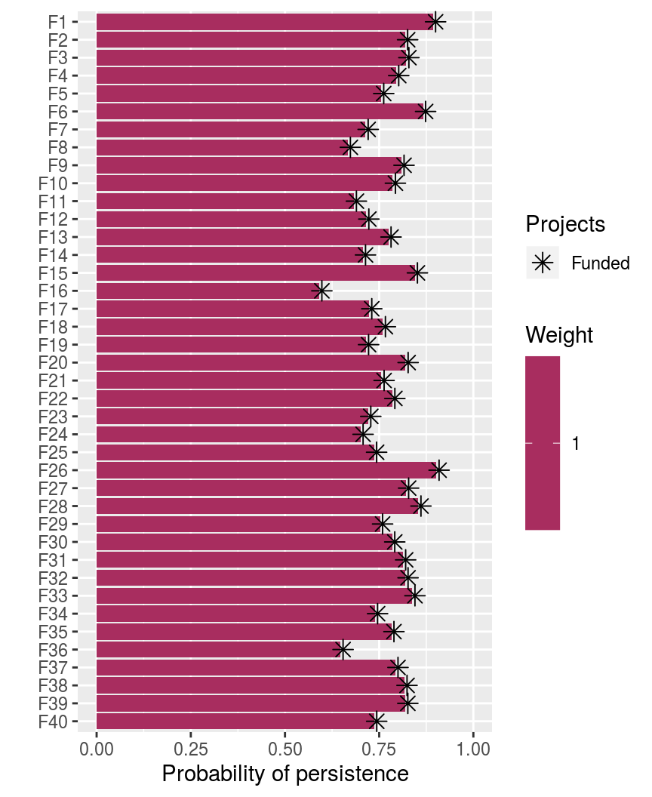
But how would the number of features which meet the target change if we increased the budget? Or how would the number of features which meet the target change if we increased the target to 85%? These are common questions in project prioritization exercises (e.g. Chadés et al. 2015; Di Fonzo et al. 2016; Martin et al. 2018). So, let’s try solving this problem with 70% and 85% targets under a range of different budgets and plot the relationships.
# specify budgets, ranging between zero and the total cost of all the budgets,
# with the total number of different budgets equaling 50
# (note that we would use a higher number for publications)
budgets <- seq(0, sum(actions$cost), length.out = 50)
# specify targets
targets <- c(0.7, 0.85)
# run prioritizations and compile results
comp_data <- lapply(targets, function(i) {
o <- lapply(budgets, function(b) {
problem(projects = projects, actions = actions, features = features,
"name", "success", "name", "cost", "name") %>%
add_max_targets_met_objective(budget = b) %>%
add_absolute_targets(i) %>%
add_binary_decisions() %>%
add_default_solver(verbose = FALSE) %>%
solve()
})
o <- as_tibble(do.call(rbind, o))
o$budget <- budgets
o$target <- paste0(i * 100, "%")
o
})
comp_data <- as_tibble(do.call(rbind, comp_data))
# plot the relationship between the number of features that meet the target
# in a solution and the cost of a solution
ggplot(comp_data, aes(x = cost, y = obj, color = target)) +
geom_step() +
xlab("Solution cost ($)") +
ylab("Number of features with targets") +
labs(color = "Target")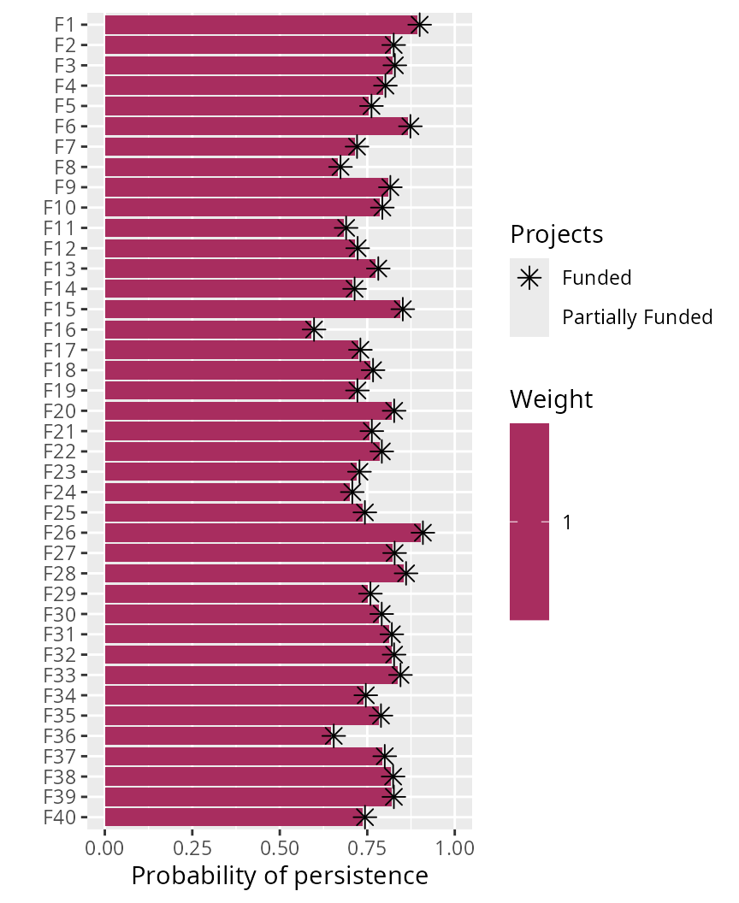
We might also be interested in understanding how exactly how much it would cost to implement a set of management actions that would result in all of the features meeting a specific target. Let’s see if we can find out how much it would cost to ensure that every feature has a 99% probability of persistence.
# build problem
p5 <- problem(projects = projects, actions = actions, features = features,
"name", "success", "name", "cost", "name") %>%
add_min_set_objective() %>%
add_absolute_targets(0.99) %>%
add_binary_decisions()
# print problem
print(p5)# Project Prioritization Problem
# actions action_1, action_2, action_3, ... (31 actions)
# projects project_1, project_2, project_3, ... (71 projects)
# features F1, F2, F3, ... (40 features)
# action costs: min: 0, max: 113.35036
# project success: min: 0.70247, max: 1
# objective: Minimum set objective
# targets: Absolute targets [targets (min: 0.99, max: 0.99)]
# weights: default
# decisions Binary decision
# constraints: <none>
# solver: default
# attempt to solve problem, but this will throw an error
s5 <- solve(p5)# Set parameter Username
# Set parameter TimeLimit to value 2147483647
# Set parameter MIPGap to value 0
# Set parameter NumericFocus to value 3
# Set parameter Presolve to value 2
# Set parameter Threads to value 1
# Set parameter PoolSolutions to value 1
# Set parameter PoolSearchMode to value 2
# Academic license - for non-commercial use only - expires 2025-04-21
# Gurobi Optimizer version 11.0.2 build v11.0.2rc0 (linux64 - "Ubuntu 22.04.4 LTS")
#
# CPU model: 11th Gen Intel(R) Core(TM) i7-1185G7 @ 3.00GHz, instruction set [SSE2|AVX|AVX2|AVX512]
# Thread count: 4 physical cores, 8 logical processors, using up to 1 threads
#
# Optimize a model with 4068 rows, 2942 columns and 10690 nonzeros
# Model fingerprint: 0xa60a2b7f
# Variable types: 0 continuous, 2942 integer (2942 binary)
# Coefficient statistics:
# Matrix range [8e-02, 1e+00]
# Objective range [9e+01, 1e+02]
# Bounds range [1e+00, 1e+00]
# RHS range [1e+00, 1e+00]
# Presolve time: 0.00s
#
# Explored 0 nodes (0 simplex iterations) in 0.00 seconds (0.00 work units)
# Thread count was 1 (of 8 available processors)
#
# Solution count 0
#
# Model is infeasible
# Best objective -, best bound -, gap -
# Error in solve(p5): project prioritization problem is infeasible
We received an error instead of a solution. If we read the error message, then we can see that it is telling us—perhaps rather tersely—that there are no valid solutions to the problem (i.e. the problem is infeasible), because some features simply cannot obtain an 99% probability of persistence given the range of conservation projects that are available. So, let’s see how much it would cost to ensure that every feature has a 60% chance of persistence.
# build problem
p6 <- problem(projects = projects, actions = actions, features = features,
"name", "success", "name", "cost", "name") %>%
add_min_set_objective() %>%
add_absolute_targets(0.60) %>%
add_binary_decisions()
# print problem
print(p6)# Project Prioritization Problem
# actions action_1, action_2, action_3, ... (31 actions)
# projects project_1, project_2, project_3, ... (71 projects)
# features F1, F2, F3, ... (40 features)
# action costs: min: 0, max: 113.35036
# project success: min: 0.70247, max: 1
# objective: Minimum set objective
# targets: Absolute targets [targets (min: 0.6, max: 0.6)]
# weights: default
# decisions Binary decision
# constraints: <none>
# solver: default
# solve problem
s6 <- solve(p6)
# print solution
print(s6)# # A tibble: 1 × 146
# solution status obj cost action_1 action_2 action_3 action_4 action_5
# <int> <chr> <dbl> <dbl> <dbl> <dbl> <dbl> <dbl> <dbl>
# 1 1 OPTIMAL 972. 972. 0 1 0 0 0
# # ℹ 137 more variables: action_6 <dbl>, action_7 <dbl>, action_8 <dbl>,
# # action_9 <dbl>, action_10 <dbl>, action_11 <dbl>, action_12 <dbl>,
# # action_13 <dbl>, action_14 <dbl>, action_15 <dbl>, action_16 <dbl>,
# # action_17 <dbl>, action_18 <dbl>, action_19 <dbl>, action_20 <dbl>,
# # action_21 <dbl>, action_22 <dbl>, action_23 <dbl>, action_24 <dbl>,
# # action_25 <dbl>, action_26 <dbl>, action_27 <dbl>, action_28 <dbl>,
# # action_29 <dbl>, action_30 <dbl>, baseline_action <dbl>, project_1 <dbl>, …
# plot solution
plot(p6, s6)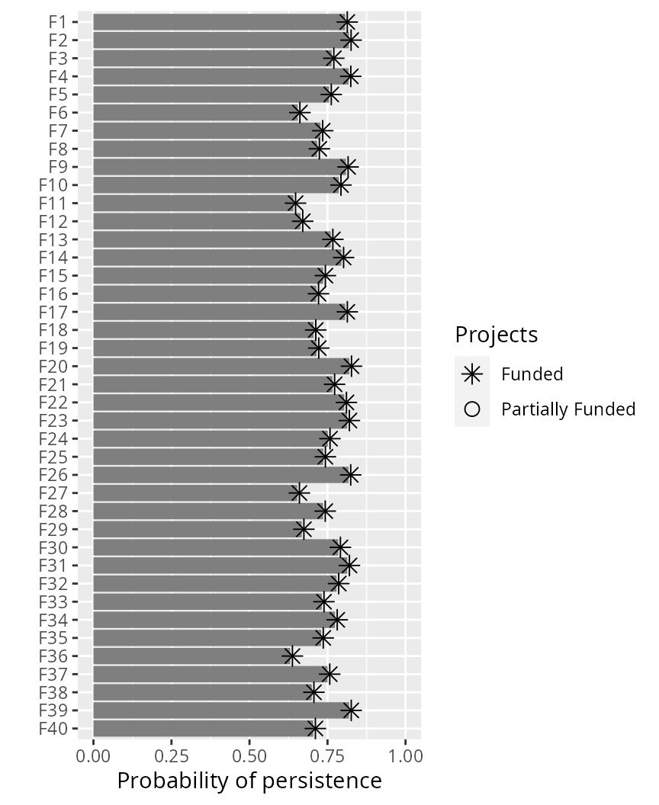
Conventionally, heuristic algorithms have been used to develop project prioritizations (e.g. Joseph et al. 2009; Bennett et al. 2014). Although solutions identified using these algorithms often perform better than solutions generated using using random processes [e.g. randomly selecting actions for funding until a budget is met; Joseph et al. (2009)], this is not an especially compelling benchmark. As talked about earlier, heuristic algorithms do not provide any guarantees on solution quality, and so should be avoided where possible (Rodrigues & Gaston 2002). To illustrate the pitfalls of relying on heuristic algorithms, let’s generate a portfolio of solutions using a backwards heuristic algorithm.
# set budgets for which to create multiple solutions
budgets <- seq(0, sum(actions$cost), length.out = 100)
# generate solutions using heuristic algorithms
s7 <- lapply(budgets, function(b) {
problem(projects = projects, actions = actions, features = features,
"name", "success", "name", "cost", "name") %>%
add_max_richness_objective(budget = b) %>%
add_feature_weights("weight") %>%
add_binary_decisions() %>%
add_heuristic_solver(verbose = FALSE) %>%
solve()
})
s7 <- as_tibble(do.call(rbind, s7))
s7$budget <- budgets
# print solutions
print(s7)# # A tibble: 100 × 147
# solution status obj cost action_1 action_2 action_3 action_4 action_5
# <int> <chr> <dbl> <dbl> <dbl> <dbl> <dbl> <dbl> <dbl>
# 1 1 NA 2284593. 0 0 0 0 0 0
# 2 1 NA 2284593. 0 0 0 0 0 0
# 3 1 NA 2284593. 0 0 0 0 0 0
# 4 1 NA 2284593. 0 0 0 0 0 0
# 5 1 NA 4513353. 99.4 0 0 0 0 0
# 6 1 NA 4513353. 99.4 0 0 0 0 0
# 7 1 NA 4513353. 99.4 0 0 0 0 0
# 8 1 NA 4513353. 99.4 0 0 0 0 0
# 9 1 NA 4513353. 99.4 0 0 0 0 0
# 10 1 NA 4513353. 99.4 0 0 0 0 0
# # ℹ 90 more rows
# # ℹ 138 more variables: action_6 <dbl>, action_7 <dbl>, action_8 <dbl>,
# # action_9 <dbl>, action_10 <dbl>, action_11 <dbl>, action_12 <dbl>,
# # action_13 <dbl>, action_14 <dbl>, action_15 <dbl>, action_16 <dbl>,
# # action_17 <dbl>, action_18 <dbl>, action_19 <dbl>, action_20 <dbl>,
# # action_21 <dbl>, action_22 <dbl>, action_23 <dbl>, action_24 <dbl>,
# # action_25 <dbl>, action_26 <dbl>, action_27 <dbl>, action_28 <dbl>, …
Now let’s generate a portfolio of solutions using random processes.
# generate random solutions under the various budgets and store
# the objective value of the best and worst solutions
s8 <- lapply(budgets, function(b) {
o <- problem(projects = projects, actions = actions, features = features,
"name", "success", "name", "cost", "name") %>%
add_max_richness_objective(budget = b) %>%
add_feature_weights("weight") %>%
add_binary_decisions() %>%
add_random_solver(verbose = FALSE, number_solutions = 100) %>%
solve()
data.frame(budget = b, min_obj = min(o$obj), max_obj = max(o$obj))
})
s8 <- as_tibble(do.call(rbind, s8))
# print solutions
print(s8)# # A tibble: 100 × 3
# budget min_obj max_obj
# <dbl> <dbl> <dbl>
# 1 0 2284593. 2284593.
# 2 30.1 2284593. 2284593.
# 3 60.1 2284593. 2284593.
# 4 90.2 2284593. 2284593.
# 5 120. 4513353. 4513353.
# 6 150. 4513353. 4513353.
# 7 180. 4513353. 4513353.
# 8 211. 2284651. 4513353.
# 9 241. 2284651. 4513353.
# 10 271. 2284651. 4513353.
# # ℹ 90 more rows
Now we can visualize how well the solutions identified using the heuristic algorithm compare to solutions generated using random processes. In the plot below, the orange line shows the performance of solutions generated using the heuristic algorithm, and the blue ribbon shows the performance of the best and worst solutions generated using random processes.
# make plot
ggplot() +
geom_ribbon(aes(x = budget, ymin = min_obj, ymax = max_obj), data = s8,
color = "#3366FF26", fill = "#3366FF26") +
geom_step(aes(x = budget, y = obj), data = s7, color = "orange") +
scale_x_continuous(labels = scales::comma) +
scale_y_continuous(labels = scales::comma) +
xlab("Budget available ($)") +
ylab("Expected richness (objective function)") +
theme(axis.text.y = element_text(angle = 90, vjust = 1))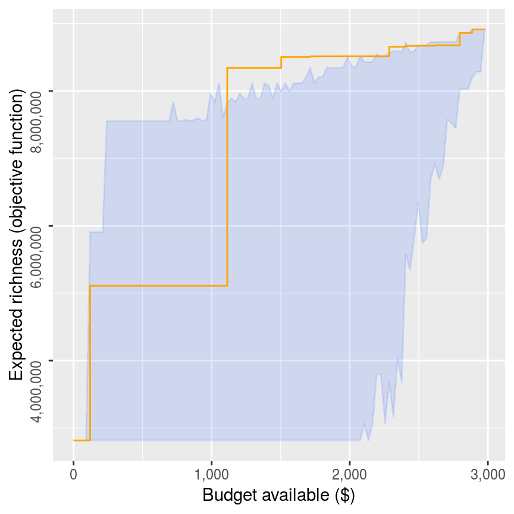
Here, we can see the that heuristic algorithm generally performs better than funding conservation projects using random processes. We can also see that for some budgets, the heuristic algorithm returns a worse solution (i.e. has a lower objective value) then solutions it found for lower budgets (i.e. where there is a step down in the orange line). Unfortunately, this behavior is normal because heuristic algorithms often deliver suboptimal solutions and the degree of suboptimality often varies depending on the budget. Despite these occasional drops in solution quality, you might be tempted to think that these results show that heuristic algorithms can perform pretty well on balance. But we can do better. Let’s generate a series of solutions using exact algorithms.
# generate solutions
s9 <- lapply(budgets, function(b) {
problem(projects = projects, actions = actions, features = features,
"name", "success", "name", "cost", "name") %>%
add_max_richness_objective(budget = b) %>%
add_feature_weights("weight") %>%
add_binary_decisions() %>%
add_default_solver(verbose = FALSE) %>%
solve()
})
s9 <- as_tibble(do.call(rbind, s9))
s9$budget <- budgets
# print solutions
print(s9)# # A tibble: 100 × 147
# solution status obj cost action_1 action_2 action_3 action_4 action_5
# <int> <chr> <dbl> <dbl> <dbl> <dbl> <dbl> <dbl> <dbl>
# 1 1 OPTIMAL 2284593. 0 0 0 0 0 0
# 2 1 OPTIMAL 2284593. 0 0 0 0 0 0
# 3 1 OPTIMAL 2284593. 0 0 0 0 0 0
# 4 1 OPTIMAL 2284593. 0 0 0 0 0 0
# 5 1 OPTIMAL 4513353. 99.4 0 0 0 0 0
# 6 1 OPTIMAL 4513353. 99.4 0 0 0 0 0
# 7 1 OPTIMAL 4513353. 99.4 0 0 0 0 0
# 8 1 OPTIMAL 4513353. 99.4 0 0 0 0 0
# 9 1 OPTIMAL 4513353. 99.4 0 0 0 0 0
# 10 1 OPTIMAL 4513353. 99.4 0 0 0 0 0
# # ℹ 90 more rows
# # ℹ 138 more variables: action_6 <dbl>, action_7 <dbl>, action_8 <dbl>,
# # action_9 <dbl>, action_10 <dbl>, action_11 <dbl>, action_12 <dbl>,
# # action_13 <dbl>, action_14 <dbl>, action_15 <dbl>, action_16 <dbl>,
# # action_17 <dbl>, action_18 <dbl>, action_19 <dbl>, action_20 <dbl>,
# # action_21 <dbl>, action_22 <dbl>, action_23 <dbl>, action_24 <dbl>,
# # action_25 <dbl>, action_26 <dbl>, action_27 <dbl>, action_28 <dbl>, …
Now let’s redraw the previous graph and add a red line to the plot to represent the solutions generated using the exact algorithm solver.
# make plot
ggplot() +
geom_ribbon(aes(x = budget, ymin = min_obj, ymax = max_obj), data = s8,
color = "#3366FF26", fill = "#3366FF26") +
geom_step(aes(x = budget, y = obj), data = s7, color = "orange") +
geom_step(aes(x = budget, y = obj), data = s9, color = "red") +
scale_x_continuous(labels = scales::comma) +
scale_y_continuous(labels = scales::comma) +
xlab("Budget available ($)") +
ylab("Expected richness (objective function)") +
theme(axis.text.y = element_text(angle = 90, hjust = 0.5, vjust = 1))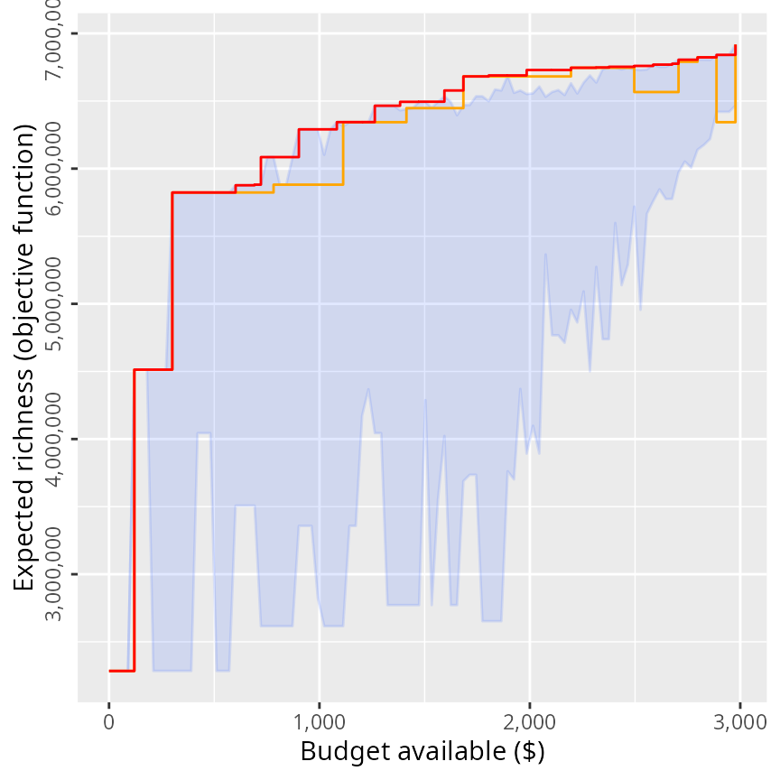
So, we can see that the exact algorithm solver performs much better than heuristic algorithms—even if heuristic algorithms perform better than random on average.
Hopefully, this tutorial has been useful. For more information and examples on using any of the functions presented in this tutorial, please refer to this package’s documentation. For instance, you could learn about the mathematical formulations that underpin the objective functions (see ?add_max_richness_objective), how to lock in our lock out certain actions from the solutions (see ?constraints), or how to develop project prioritizations using phylogenies (see ?add_max_phylo_objective). But perhaps one of the best ways to learn how to use a new piece of software is to just try it out. Test it, try breaking it, make mistakes, and learn from them. We would recommend generating project prioritizations using simulated datasets (see ?simulate_ptm_data and ?simulate_ppp_data) and seeing if the solutions line up with what you expect. This way you can quickly verify that the problems you build actually mean what you think they mean. For instance, you can try playing around with the targets and see what effect they have on the solutions, or try playing around with weights and see what effect they have on the solutions.
Finally, if you have any questions about using the oppr R package or suggestions for improving its documentation or functionality (especially this tutorial), please post an issue on this package’s online coding repository (https://github.com/prioritizr/oppr/issues).
To cite the oppr package in publications, please use:
Hanson JO, Schuster R, Strimas-Mackey M & Bennett JR (2019)
Optimality in prioritizing conservation projects. Methods in Ecology
& Evolution, 10: 1655--1663.
Hanson JO, Schuster R, Strimas-Mackey M, Bennett J (2024) oppr:
Optimal Project Prioritization R package version 1.0.4.1.
https://github.com/prioritizr/oppr
To see these entries in BibTeX format, use 'print(<citation>,
bibtex=TRUE)', 'toBibtex(.)', or set
'options(citation.bibtex.max=999)'.